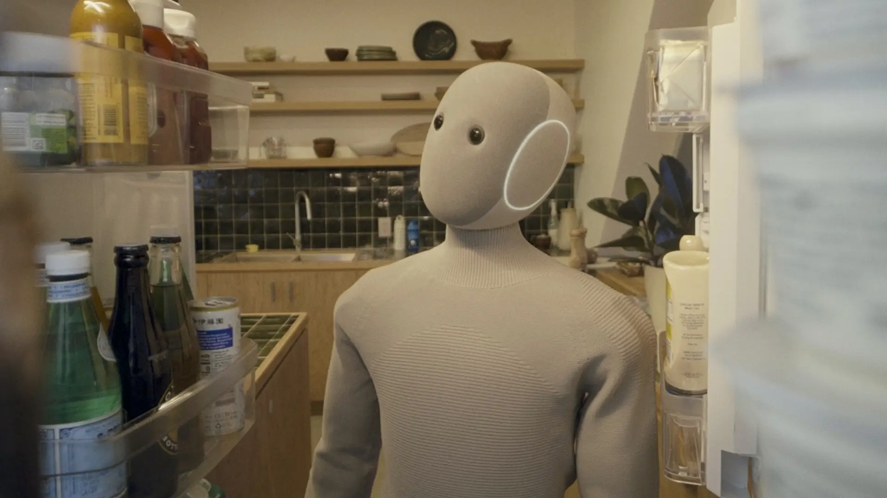

The robot combines all AI applications into one
At this point, we know that intelligent robots are machines capable of adapting to the unexpected.
Now imagine saying to a household robot: “Bring me something to drink.” For us it’s an ordinary sentence, while for the robot it’s a huge problem.
Going back to the categories we saw earlier, which are also part of this collection, each one plays a fundamental role in making sure the robot manages to complete its task.
- Language technologies: the robot has to understand the request, which is vague. In fact, it doesn’t say what or where.
- Preferences (recommendation systems): for example, the robot may know that in the evening you usually have water and not coffee.
- Computer vision: the robot has to find the right bottle, in the right place, and tell it apart from other similar bottles.
- Body and physical world: the robot has to grab the bottle with the right amount of force, not too much and not too little, and bring it to you without bumping into anyone.
These four different technologies, which we looked at separately in the previous sections, have to work together at the same moment. So the question naturally arises: how do they coordinate?
The traditional approach was to handle each task with a separate program: one to understand speech, one to see, one to move. The programs passed information to each other like on an assembly line. If one link made a mistake, everything failed. Today, instead, models called vision-language-action (VLA) models are being developed. They take an image and a sentence as input and directly output the movements to make. They’re a bit like an AI chatbot, but instead of answering with text, they answer by, for example, moving an arm.
For a concrete comparison, think of the telephone game: if the first module hears “see” instead of “drink,” all the others perfectly carry out the wrong task. No module can notice the mistake, because each one only sees its own piece. On top of that, every new situation requires rewriting the rules by hand. A robot programmed for “water, juice, milk” doesn’t know what to do when it sees a bottle of iced tea.
These VLA models work in a relatively simple way: as mentioned, they take an image and a sentence and directly output the movements. The “trick” is that movements are treated as if they were words. For example, Google chose to represent actions as tokens, which are the word fragments that language models normally use. Just as a chatbot predicts the next word in a sentence, the model predicts how the arm should move. The advantage is that the model is built on a language model trained on a large amount of text and images, so it already “knows” a lot about the world before it even touches an object.
A concrete example: Google DeepMind’s RT-2 (2023). The engineers asked the robot to “pick up the extinct animal” from among various objects, and the robot picked up a toy dinosaur. No one had ever taught it that task before; the robot simply combined what it knew from language (“dinosaurs are extinct”) with what it saw.
Today, many recent robot models follow a dual architecture. One part reasons about the environment and the instructions and plans what to do, while the other translates those plans into fast motor commands that keep the robot balanced and moving. The “bring me something to drink” scenario we just described might not be so far off in the near future. In fact, in October 2025 the company 1X Technologies opened orders for NEO, presented as the first household humanoid robot for consumers, at a price of $20,000.

A model that can understand, see and act is a huge step forward. But how much can we let a robot decide on its own? And in which environments is it ready to do so? The answer depends on two factors: its level of autonomy and how unpredictable the world it has to work in is.